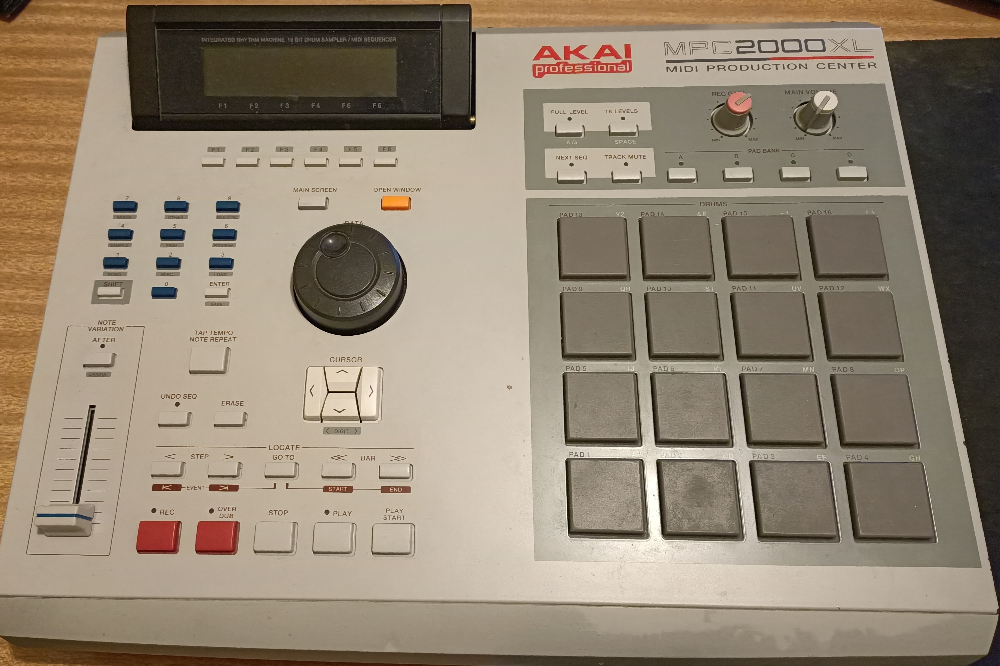
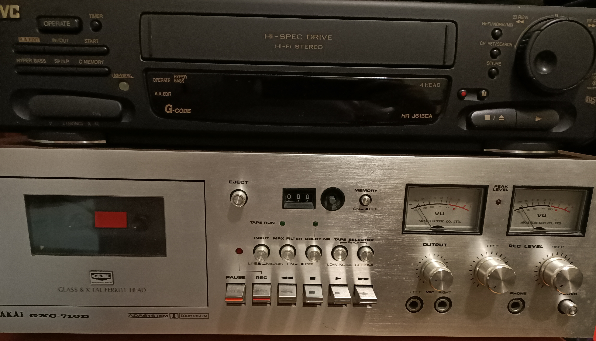
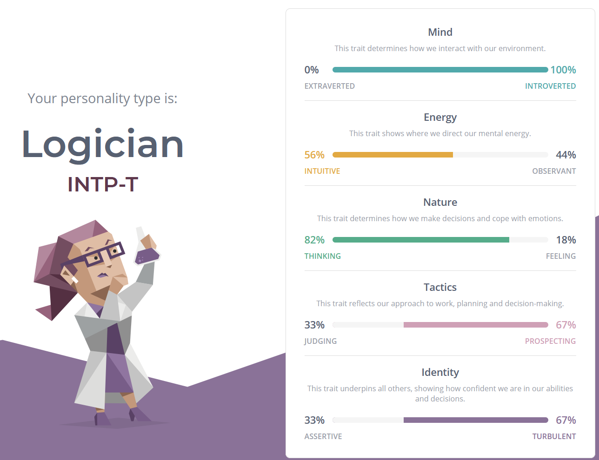
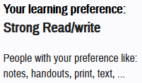
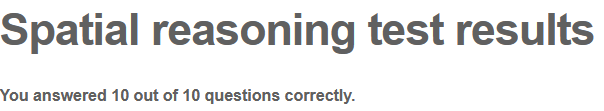

(Not actually me)
First Name: William
Last Name: Ericson
Student ID: s3866209
Email Address: s3866209@student.rmit.edu.au
Blood Type: A+
Star Sign: Aquarius
MBTI: INTP-T
Favourite Hobby: Listening to music
I have been interested in IT from a young age, it all started when one of my cousins showed me how to use Cheat Engine, my interest in computers started from there.
 While I enjoy listening to music, I also used to make my own, I studied Music performance as well as technical production, yes, I have performed live, no, I will not show you the videos.
Over the years, I have hoarded a fair bit of music, while the bulk of my collection is digital(it takes up less space), I also have a sizeable collection of CDs and cassette tapes (as well as a few records here and there).

Talking about tapes, I also collect movies on tape (only VHS, no Betamax).
My interest in IT started a long time ago when I was a kid, I used to think that a computer was something to use to play games, that was until my cousin showed me Cheat Engine, while I did have fun adding extra stuff to the games I played, I also enjoyed putting in random codes and seeing what it would do, I started to learn more and more about computers from just messing around.
I am currently studying at RMIT, I found out about this course through Open Universities, I studied on campus Deakin College and a bit in Deakin University prior to this. The fact that I can study this course from home was the main reason why I chose it, rent is expensive, rent in Melbourne, right next to the university is even more expensive.
I hope to get a better understanding of, and hopefully, a job in the IT industry, IT is such a big industry so I have a bit of trouble figuring out what I want to do, but I would like to do something related to robotics.
I want to develop robots, one option would be becoming a robotics engineer, while this course does not cover everthing I need to become one, I can work on the software side of things. A link to a job listing can be found here.
To me, a robotics engineer is someone that works with and develops robots for industrial as well as home use, they would develop plans, build, program, and test out robots. I hope to make robots that are beneficial to peoples lives, I am more interested in robots that can help a person do things that would not be possible before, not robots that would replace people.
While the job listing I have attached is more about programming and doing maintenance on the robot, to be a successful robotics engineer, I believe that having a deep understanding in the software, as well as hardware side of IT is incredibly important, depending on what stage of development the robot is at, it would be more engineering than IT.
As I am right now, I am not qualified for this job, while I have taken robotics classes in the past, and I am not a complete beginner to programming, the amount of knowledge I have is small compared to the amount of knowledge I should have for a job like this.
As for my plans on how I will get qualified for a job like this, instead of trying to get good at every aspect of the job, I believe that it would be better to focus on thing at the start, for me, that would be programming, while knowledge about the hardware side of robotics is important, I believe learning the software side will be enough to allow me to get a foot in the door of this industry.
For my personality profile I have taken 3 tests, the first test being the Myer-Briggs Type Indicator, followed by a VARK questionnaire, and lastly, a spatial reasoning test.
First, the MBTI results, I am an INTP-T.  The results of the test wasn't shocking, I already know what type of personality I have, having a label attached to it hasn't changed anything, the results for this test does not change how I will behave in a team, I have worked in a few groups in the past, and while I do have my preferences on what type of people I want to work with, it doesn't mean that that I have difficulty working with others.
Next is the VARK test , the results show that I have a strong reading/writing preference. When it comes to team discussions. While searching for information about the VARK test, there is a lot of criticism about learning styles and about how effective it really is, so I should not let the results of this test influence me to much.
 The final test was a spatial reasoning test. I chose this test type of test because it is a type that I will likely face in the future, while it may not be as important in IT, the skills needed to do well in this test is important to have, especially if you plan on doing something related to engineering. The test I completed was a basic 10 question cube test, I found this test to be difficult and I spent a lot of time imagining the shape in my head and what goes on each side, I hope to be able to complete tests like these faster in the future.
RenameMe will be a program that will be used to rename files, I hope to make it a powerful tool that can support multiple different operating systems, as well as allow 3rd party plugins. It can rename files using metadata, it can look for duplicates under different names, it will support regular expressions, as well as find similar files with a typo in the name, change file attributes, edit metadata, and if needed, strip files of their metadata.
My motivation for this project is the fact that there isn't a complete renaming solution out there, there are plenty of programs that can do what I want, but that is the problem, I need to use multiple programs to do it, I want an all in solution that can handle what I need it to do. An example of this would be a program called 'Bulk Rename Utility', I use this program to rename files, it is very powerful, but I can't change metadata on bulk while I rename files, it isn't as much as a problem for me now, but when I used to study photography in VCE, I would have thousands of photos but I would get annoyed by the fact that I would have to jump from program to program to rename everything and change the exif data.
Rename files en masse
Allow files to be renamed without a limit, this includes renaming folders and the contents in the folders. Allow file names to be changed and edited to fit a certain format, for example, a list of files numbered 1, 2, 3, ..., 100 will be renamed to 001, 002, etc, depending on the program or device used, the files can be sorted incorrectly, e.g, 1, 10, 100, 1000, ..., instead of 1, 2, 3. Allow searching for a keyword and replace the word, e.g, coke becomes coca-cola. Rename parts of the file name, and also ignore certain characters in a crop, for example beach014f0day27.png can turn into 0140day27.png. Add characters or words to a file name, so files between the range of 140.png to 207.png can turn into beach140.png-beach207.png
Find similar and duplicate files
Search through all the files and find files that match, this could be matching filenames, matching metadata or just finding files with the same extension, multiple folders in different locations can be searched at the same time, but if the folder is in a different location, the location has to be specified. This can be used to search for photos on a backup drive, and transfer photos over that have not been found on said drive. You can also search for files that have the same GPS metadata, shot on the same camera, same album artist, etc.
Rename files using a seperate file or information from a website
When ripping CDs, the ripped files don't always have track information, instead of renaming files and metadata in one by one, the program will allow a person to take information from a file or from a website, saving the user time, and headaches from typos.
Rename files as they are being copied
When transferring files from a camera, a phone, or from some other source, it can be useful to rename files to fit a certain format, for example, photos transferred from a phone can have a date it was transferred added to the file name, this makes it easy to find out when a photo was transferred to the computer.
Find files saved with the wrong extension
From time to time, files can be saved using the wrong format, or the format may have been changed on accident, an example of this would be downloading photos from the web, some files are saved as webp even though it is actually a jpeg, depending on the photo viewer used, the user can be bombarded with constant error messages asking them to change the file extension. A program that can change incorrect file extensions en masse would be extremely useful for certain use cases.
Multiple different operating systems would be needed for this program, the goal is to make it run on multiple systems, to do that, a programming language that could work on multiple systems is needed. A lot of test files would be needed, this is especially important for finding bugs that could appear when renaming files.
With the completion of this project, there will be a proper all in one solution for renaming files, while there are similar solutions, there are now that I have found that can edit metadata while renaming and copying files, while it may be aimed at a niche group, it will be the best program aimed at that niche.